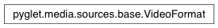

VideoFormat Class¶
-
class
VideoFormat(width, height, sample_aspect=1.0)¶ Video details.
An instance of this class is provided by sources with a video track. You should not modify the fields.
Note that the sample aspect has no relation to the aspect ratio of the video image. For example, a video image of 640x480 with sample aspect 2.0 should be displayed at 1280x480. It is the responsibility of the application to perform this scaling.
Variables: - width – Width of video image, in pixels.
- height – Height of video image, in pixels.
- sample_aspect – Aspect ratio (width over height) of a single video pixel.
- frame_rate – Frame rate (frames per second) of the video.
AVbin 8 or later is required, otherwise the frame rate will be
None. Since: pyglet 1.2.